Text Analytics and Natural Language Processing using Graphs
In the following we will focus on analyzing textual documents and leverage on graph analysis in order to identify insight and extract relevant information.
In particular in the following we will show you how to:
- Extract structured information from text by using NLP techniques and models
- Build different type of graphs starting from the information extracted in the previous point
- Analyze the graph
Load Dataset
'SUBROTO SAYS INDONESIA SUPPORTS TIN PACT EXTENSION Mines and Energy Minister Subroto confirmed Indonesian support for an extension of the sixth International Tin Agreement (ITA), but said a new pact was not necessary. Asked by Reuters to clarify his statement on Monday in which he said the pact should be allowed to lapse, Subroto said Indonesia was ready to back extension of the ITA. "We can support extension of the sixth agreement," he said. "But a seventh accord we believe to be unnecessary." The sixth ITA will expire at the end of June unless a two-thirds majority of members vote for an extension. 'from collections import Counter
len(Counter([label for document_labels in corpus["label"] for label in document_labels]).most_common())90| clean_text | label | |
|---|---|---|
| id | ||
| test/14826 | ASIAN EXPORTERS FEAR DAMAGE FROM U.S.-JAPAN RI... | [trade] |
| test/14828 | CHINA DAILY SAYS VERMIN EAT 7-12 PCT GRAIN STO... | [grain] |
| test/14829 | JAPAN TO REVISE LONG-TERM ENERGY DEMAND DOWNWA... | [crude, nat-gas] |
| test/14832 | THAI TRADE DEFICIT WIDENS IN FIRST QUARTER Th... | [corn, grain, rice, rubber, sugar, tin, trade] |
| test/14833 | INDONESIA SEES CPO PRICE RISING SHARPLY Indon... | [palm-oil, veg-oil] |
Language Detection
en 9899
sv 432
de 371
sw 29
so 23
pt 7
nl 7
vi 6
et 5
ca 2
Name: language, dtype: int64| clean_text | label | language | |
|---|---|---|---|
| id | |||
| test/14826 | ASIAN EXPORTERS FEAR DAMAGE FROM U.S.-JAPAN RI... | [trade] | en |
| test/14828 | CHINA DAILY SAYS VERMIN EAT 7-12 PCT GRAIN STO... | [grain] | en |
| test/14829 | JAPAN TO REVISE LONG-TERM ENERGY DEMAND DOWNWA... | [crude, nat-gas] | en |
| test/14832 | THAI TRADE DEFICIT WIDENS IN FIRST QUARTER Th... | [corn, grain, rice, rubber, sugar, tin, trade] | en |
| test/14833 | INDONESIA SEES CPO PRICE RISING SHARPLY Indon... | [palm-oil, veg-oil] | en |
Using fasttext
% Total % Received % Xferd Average Speed Time Time Time Current
Dload Upload Total Spent Left Speed
100 916k 100 916k 0 0 547k 0 0:00:01 0:00:01 --:--:-- 548kimport fasttext
m = fasttext.load_model("lid.176.ftz")
def getLanguage(text: str):
return m.predict(text)[0][0].replace("__label__", "")Warning : `load_model` does not return WordVectorModel or SupervisedModel any more, but a `FastText` object which is very similar.en 10278
de 90
ja 73
it 67
sv 52
zh 48
es 31
fr 27
eu 20
eo 12
Name: language, dtype: int64NLP Enrichment
In order to download the model from the Spacy library, please issue the following command in a shell
python -m spacy download en_core_web_md
"THAI TRADE DEFICIT WIDENS IN FIRST QUARTER Thailand's trade deficit widened to 4.5 billion baht in the first quarter of 1987 from 2.1 billion a year ago, the Business Economics Department said. It said Janunary/March imports rose to 65.1 billion baht from 58.7 billion. Thailand's improved business climate this year resulted in a 27 pct increase in imports of raw materials and semi-finished products. The country's oil import bill, however, fell 23 pct in the first quarter due to lower oil prices. The department said first quarter exports expanded to 60.6 billion baht from 56.6 billion. Export growth was smaller than expected due to lower earnings from many key commodities including rice whose earnings declined 18 pct, maize 66 pct, sugar 45 pct, tin 26 pct and canned pineapples seven pct. Products registering high export growth were jewellery up 64 pct, clothing 57 pct and rubber 35 pct. "Export corpus Dataframe
| clean_text | label | language | parsed | triplets | keywords | |
|---|---|---|---|---|---|---|
| id | ||||||
| test/14826 | ASIAN EXPORTERS FEAR DAMAGE FROM U.S.-JAPAN RI... | [trade] | en | (ASIAN, EXPORTERS, FEAR, DAMAGE, FROM, U.S.-JA... | [(EXPORTERS, (FEAR, False), DAMAGE), (Japan, (... | [(trading, 0.461513063953854), (said, 0.315985... |
| test/14828 | CHINA DAILY SAYS VERMIN EAT 7-12 PCT GRAIN STO... | [grain] | en | (CHINA, DAILY, SAYS, VERMIN, EAT, 7, -, 12, PC... | [(VERMIN, (EAT, False), STOCKS), (vermin, (con... | [(vermin, 0.3120614380287176), (daily, 0.26110... |
| test/14829 | JAPAN TO REVISE LONG-TERM ENERGY DEMAND DOWNWA... | [crude, nat-gas] | en | (JAPAN, TO, REVISE, LONG, -, TERM, ENERGY, DEM... | [(JAPAN, (REVISE, False), DEMAND), (Industry, ... | [(energy, 0.3857636092660117), (demand, 0.3479... |
| test/14832 | THAI TRADE DEFICIT WIDENS IN FIRST QUARTER Th... | [corn, grain, rice, rubber, sugar, tin, trade] | en | (THAI, TRADE, DEFICIT, WIDENS, IN, FIRST, QUAR... | [(Products, (registering, False), growth), (Pr... | [(pct, 0.5457455609144312), (export, 0.2656069... |
| test/14833 | INDONESIA SEES CPO PRICE RISING SHARPLY Indon... | [palm-oil, veg-oil] | en | (INDONESIA, SEES, CPO, PRICE, RISING, SHARPLY,... | [(INDONESIA, (SEES, False), PRICE), (Indonesia... | [(indonesia, 0.2410428235502938), (harahap, 0.... |
Graph Generation
In the following, we will show you how to create two different kind of graphs out of a corpus of documents:
- Knowledge base graphs, where the subject-verb-object relation will be encoded to build a semantic graph
- Bipartite graphs, linking documents with the entities/keywords appearing therein
Knowledge base
| clean_text | label | language | parsed | triplets | |
|---|---|---|---|---|---|
| id | |||||
| test/14826 | ASIAN EXPORTERS FEAR DAMAGE FROM U.S.-JAPAN RI... | [trade] | en | (ASIAN, EXPORTERS, FEAR, DAMAGE, FROM, U.S.-JA... | [(EXPORTERS, (FEAR, False), DAMAGE), (Japan, (... |
| test/14828 | CHINA DAILY SAYS VERMIN EAT 7-12 PCT GRAIN STO... | [grain] | en | (CHINA, DAILY, SAYS, VERMIN, EAT, 7, -, 12, PC... | [(VERMIN, (EAT, False), STOCKS), (vermin, (con... |
| test/14829 | JAPAN TO REVISE LONG-TERM ENERGY DEMAND DOWNWA... | [crude, nat-gas] | en | (JAPAN, TO, REVISE, LONG, -, TERM, ENERGY, DEM... | [(JAPAN, (REVISE, False), DEMAND), (Industry, ... |
| test/14832 | THAI TRADE DEFICIT WIDENS IN FIRST QUARTER Th... | [corn, grain, rice, rubber, sugar, tin, trade] | en | (THAI, TRADE, DEFICIT, WIDENS, IN, FIRST, QUAR... | [(Products, (registering, False), growth), (Pr... |
| test/14833 | INDONESIA SEES CPO PRICE RISING SHARPLY Indon... | [palm-oil, veg-oil] | en | (INDONESIA, SEES, CPO, PRICE, RISING, SHARPLY,... | [(INDONESIA, (SEES, False), PRICE), (Indonesia... |
be 7620
have 2675
include 2010
tell 1729
buy 1464
sell 1385
say 1216
take 1172
make 1151
give 1029
Name: edge, dtype: int64def plotDistribution(serie: pd.Series, nbins: int, minValue=None, maxValue=None):
_minValue=int(np.floor(np.log10(minValue if minValue is not None else serie.min())))
_maxValue=int(np.ceil(np.log10(maxValue if maxValue is not None else serie.max())))
bins = [0] + list(np.logspace(_minValue, _maxValue, nbins)) + [np.inf]
serie.hist(bins=bins)
plt.xscale("log")def graphSummary(graph, bins=10):
print(nx.info(graph))
plt.figure(figsize=(20, 8))
plt.subplot(1,2,1)
degrees = pd.Series({k: v for k, v in nx.degree(graph)})
plt.yscale("log")
plotDistribution(degrees, bins)
try:
plt.subplot(1,2,2)
allEdgesWeights = pd.Series({(d[0], d[1]): d[2]["weight"] for d in graph.edges(data=True)})
plotDistribution(allEdgesWeights, bins)
plt.yscale("log")
except:
passName:
Type: MultiDiGraph
Number of nodes: 7576
Number of edges: 72263
Average in degree: 9.5384
Average out degree: 9.5384Name:
Type: MultiDiGraph
Number of nodes: 7576
Number of edges: 72263
Average in degree: 9.5384
Average out degree: 9.5384/Users/deusebio/.pyenv/versions/3.7.6/envs/ml-book-7/lib/python3.7/site-packages/matplotlib/axes/_axes.py:6694: RuntimeWarning: invalid value encountered in multiply
boffset = -0.5 * dr * totwidth * (1 - 1 / nx)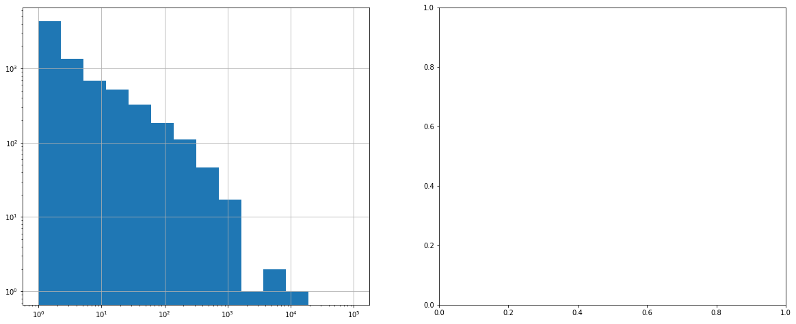
import numpy as np
np.log10(pd.Series({k: v for k, v in nx.degree(G)}).sort_values(ascending=False)).hist()
plt.yscale("log")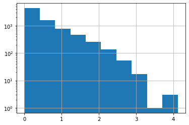
Analysis of a certain relation
| id | source | target | edge | |
|---|---|---|---|---|
| 0 | test/14826 | exporter | damage | fear |
| 1 | test/14826 | japan | fear | raise |
| 2 | test/14826 | row | damage | inflict |
| 3 | test/14826 | they | correspondent | tell |
| 4 | test/14826 | they | u.s. | tell |
import os
plt.figure(figsize=(13, 6))
pos = nx.spring_layout(G, k=1.2) # k regulates the distance between nodes
nx.draw(G, with_labels=True, node_color='skyblue', node_size=1500, edge_cmap=plt.cm.Blues, pos = pos, font_size=12)
# plt.show()
# plt.savefig(os.path.join(".", "KnowledgeGraph.png"), dpi=300, format="png")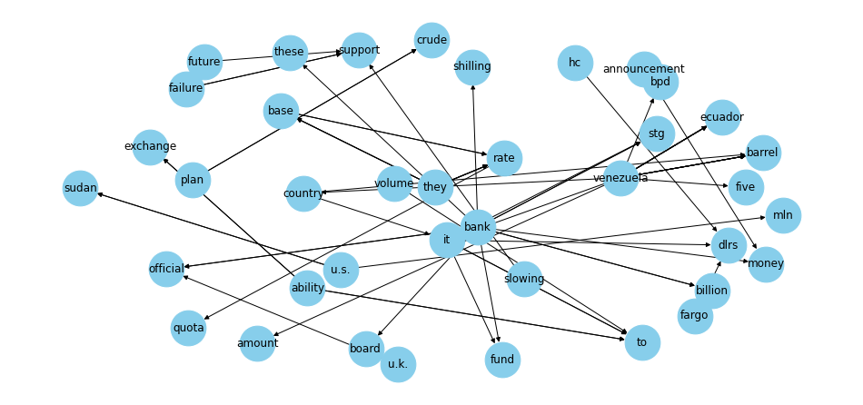
Bipartite Graph
Let’s start by extracting the keywords from the documents
text = corpus["clean_text"][0]
keywords(text, words=10, split=True, scores=True, pos_filter=('NN', 'JJ'), lemmatize=True)[('trading', 0.4615130639538529),
('said', 0.3159855693494515),
('export', 0.2691553824958079),
('import', 0.17462010006456888),
('japanese electronics', 0.1360932626379031),
('industry', 0.1286043740379779),
('minister', 0.12229815662000462),
('japan', 0.11434500812642447),
('year', 0.10483992409352465)]| clean_text | label | language | parsed | triplets | keywords | |
|---|---|---|---|---|---|---|
| id | ||||||
| test/14826 | ASIAN EXPORTERS FEAR DAMAGE FROM U.S.-JAPAN RI... | [trade] | en | (ASIAN, EXPORTERS, FEAR, DAMAGE, FROM, U.S.-JA... | [(EXPORTERS, (FEAR, False), DAMAGE), (Japan, (... | [(trading, 0.461513063953854), (said, 0.315985... |
| test/14828 | CHINA DAILY SAYS VERMIN EAT 7-12 PCT GRAIN STO... | [grain] | en | (CHINA, DAILY, SAYS, VERMIN, EAT, 7, -, 12, PC... | [(VERMIN, (EAT, False), STOCKS), (vermin, (con... | [(vermin, 0.3120614380287176), (daily, 0.26110... |
| test/14829 | JAPAN TO REVISE LONG-TERM ENERGY DEMAND DOWNWA... | [crude, nat-gas] | en | (JAPAN, TO, REVISE, LONG, -, TERM, ENERGY, DEM... | [(JAPAN, (REVISE, False), DEMAND), (Industry, ... | [(energy, 0.3857636092660117), (demand, 0.3479... |
| test/14832 | THAI TRADE DEFICIT WIDENS IN FIRST QUARTER Th... | [corn, grain, rice, rubber, sugar, tin, trade] | en | (THAI, TRADE, DEFICIT, WIDENS, IN, FIRST, QUAR... | [(Products, (registering, False), growth), (Pr... | [(pct, 0.5457455609144312), (export, 0.2656069... |
| test/14833 | INDONESIA SEES CPO PRICE RISING SHARPLY Indon... | [palm-oil, veg-oil] | en | (INDONESIA, SEES, CPO, PRICE, RISING, SHARPLY,... | [(INDONESIA, (SEES, False), PRICE), (Indonesia... | [(indonesia, 0.2410428235502938), (harahap, 0.... |
def extractEntities(ents, minValue=1, typeFilters=["GPE", "ORG", "PERSON"]):
entities = pd.DataFrame([
{"lemma": e.lemma_, "lower": e.lemma_.lower(), "type": e.label_}
for e in ents if hasattr(e, "label_")
])
if len(entities)==0:
return pd.DataFrame()
g = entities.groupby(["type", "lower"])
summary = pd.concat({
"alias": g.apply(lambda x: x["lemma"].unique()),
"count": g["lower"].count()
}, axis=1)
return summary[summary["count"]>1].loc[pd.IndexSlice[typeFilters, :, :]]
def getOrEmpty(parsed, _type):
try:
return list(parsed.loc[_type]["count"].sort_values(ascending=False).to_dict().items())
except:
return []
def toField(ents):
typeFilters=["GPE", "ORG", "PERSON"]
parsed = extractEntities(ents, 1, typeFilters)
return pd.Series({_type: getOrEmpty(parsed, _type) for _type in typeFilters})
| clean_text | label | language | parsed | triplets | keywords | GPE | ORG | PERSON | |
|---|---|---|---|---|---|---|---|---|---|
| id | |||||||||
| test/14826 | ASIAN EXPORTERS FEAR DAMAGE FROM U.S.-JAPAN RI... | [trade] | en | (ASIAN, EXPORTERS, FEAR, DAMAGE, FROM, U.S.-JA... | [(EXPORTERS, (FEAR, False), DAMAGE), (Japan, (... | [(trading, 0.461513063953854), (said, 0.315985... | [(u.s., 13), (japan, 12), (taiwan, 3), (tokyo,... | [] | [] |
| test/14828 | CHINA DAILY SAYS VERMIN EAT 7-12 PCT GRAIN STO... | [grain] | en | (CHINA, DAILY, SAYS, VERMIN, EAT, 7, -, 12, PC... | [(VERMIN, (EAT, False), STOCKS), (vermin, (con... | [(vermin, 0.3120614380287176), (daily, 0.26110... | [(china, 2)] | [] | [] |
| test/14829 | JAPAN TO REVISE LONG-TERM ENERGY DEMAND DOWNWA... | [crude, nat-gas] | en | (JAPAN, TO, REVISE, LONG, -, TERM, ENERGY, DEM... | [(JAPAN, (REVISE, False), DEMAND), (Industry, ... | [(energy, 0.3857636092660117), (demand, 0.3479... | [(japan, 2)] | [] | [] |
| test/14832 | THAI TRADE DEFICIT WIDENS IN FIRST QUARTER Th... | [corn, grain, rice, rubber, sugar, tin, trade] | en | (THAI, TRADE, DEFICIT, WIDENS, IN, FIRST, QUAR... | [(Products, (registering, False), growth), (Pr... | [(pct, 0.5457455609144312), (export, 0.2656069... | [(thailand, 2)] | [] | [] |
| test/14833 | INDONESIA SEES CPO PRICE RISING SHARPLY Indon... | [palm-oil, veg-oil] | en | (INDONESIA, SEES, CPO, PRICE, RISING, SHARPLY,... | [(INDONESIA, (SEES, False), PRICE), (Indonesia... | [(indonesia, 0.2410428235502938), (harahap, 0.... | [(indonesia, 4), (malaysia, 2)] | [(cpo, 2)] | [] |
We finally create the bipartite graph
Name:
Type: Graph
Number of nodes: 25752
Number of edges: 100311
Average degree: 7.7905### Entity-Entity Graph Projection
/Users/deusebio/.pyenv/versions/3.7.6/envs/ml-book-7/lib/python3.7/site-packages/matplotlib/axes/_axes.py:6694: RuntimeWarning: invalid value encountered in multiply
boffset = -0.5 * dr * totwidth * (1 - 1 / nx)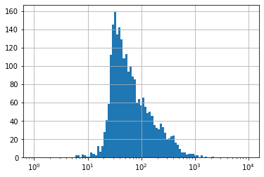
Name:
Type: Graph
Number of nodes: 2386
Number of edges: 120198
Average degree: 100.7527Name:
Type: Graph
Number of nodes: 2265
Number of edges: 8082
Average degree: 7.1364Local and global properties of the graph
globalKpis = [{
"shortest_path": nx.average_shortest_path_length(_graph),
"clustering_coefficient": nx.average_clustering(_graph),
"global_efficiency": nx.global_efficiency(_graph)
} for components in nx.connected_components(filteredEntityGraph)
for _graph in [nx.subgraph(filteredEntityGraph, components)]]pd.concat([
pd.DataFrame(globalKpis),
pd.Series([len(c) for c in nx.connected_components(filteredEntityGraph)])
], axis=1)| shortest_path | clustering_coefficient | global_efficiency | 0 | |
|---|---|---|---|---|
| 0 | 4.715074 | 0.211563 | 0.227356 | 2254 |
| 1 | 1.000000 | 0.000000 | 1.000000 | 2 |
| 2 | 1.500000 | 0.000000 | 0.750000 | 4 |
| 3 | 1.333333 | 0.000000 | 0.833333 | 3 |
| 4 | 1.000000 | 0.000000 | 1.000000 | 2 |
{'shortest_path': 4.715073779178782,
'clustering_coefficient': 0.21156314975836948,
'global_efficiency': 0.2273555107741054}/Users/deusebio/.pyenv/versions/3.7.6/envs/ml-book-7/lib/python3.7/site-packages/matplotlib/axes/_axes.py:6694: RuntimeWarning: invalid value encountered in multiply
boffset = -0.5 * dr * totwidth * (1 - 1 / nx)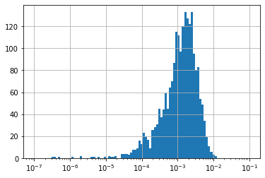
plt.figure(figsize=(12, 5))
plt.subplot(1,2,1)
plt.title("Page rank vs degrees")
plt.plot(kpis["pageRank"], kpis["degrees"], '.', color="tab:blue")
plt.xlabel("page rank")
plt.ylabel("degree")
plt.xscale("log")
plt.yscale("log")
plt.subplot(1,2,2)
plt.title("Page rank vs betweeness")
plt.plot(kpis["pageRank"], kpis["betweeness"], '.', color="tab:blue")
plt.xlabel("page rank")
plt.ylabel("betweeness")
plt.xscale("log")
plt.yscale("log")
plt.ylim([1E-5, 2E-2])(1e-05, 0.02)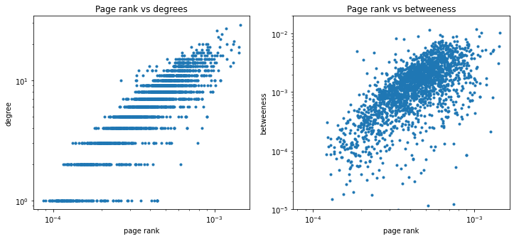
plt.figure(figsize=(6,4))
plt.plot(kpis["pageRank"], kpis["betweeness"], 'b.')
plt.xlabel("page rank")
plt.ylabel("betweeness")
plt.xscale("log")
plt.yscale("log")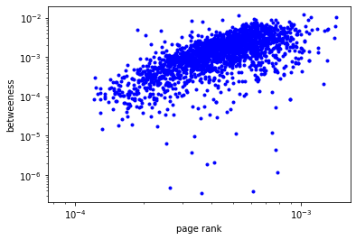
plt.figure(figsize=(12, 5))
plt.subplot(1,2,1)
plotDistribution(degrees, 13)
plt.yscale("log")
plt.title("Degree Distribution")
plt.subplot(1,2,2)
plotDistribution(allEdgesWeights, 20)
plt.xlim([1E-2, 10])
plt.yscale("log")
plt.title("Edge Weight Distribution")/Users/deusebio/.pyenv/versions/3.7.6/envs/ml-book-7/lib/python3.7/site-packages/matplotlib/axes/_axes.py:6694: RuntimeWarning: invalid value encountered in multiply
boffset = -0.5 * dr * totwidth * (1 - 1 / nx)Text(0.5, 1.0, 'Edge Weight Distribution')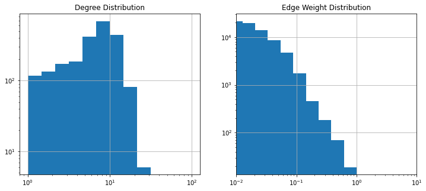
Visualization of the Network
Community detection
communities.value_counts().sort_values(ascending=False).plot(kind="bar", figsize=(12, 5))
plt.xlabel("Community")
plt.ylabel("# Members")Text(0, 0.5, '# Members')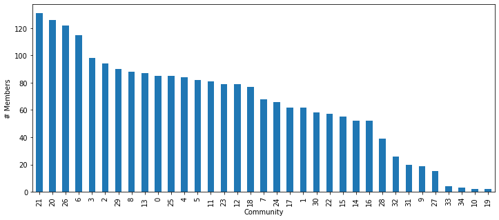
Index(['pharmaceutical', 'worth', 'american motors', 'parts', 'auditors',
'qualified', 'midland', 'salomon', 'consolidated', 'taft', 'goldman',
'rejects', 'plants', 'wednesday', 'tvx', 'miami', 'jersey', 'broadcast',
'dudley taft', 'earn', 'audit', 'opinion', 'closing', 'directors',
'liquidating', 'stations', 'controls', 'radio', 'chrysler',
'statements', 'gets', 'motors', 'year ending', 'aluminum', 'beverage',
'near', 'employs', 'renault', 'kentucky', 'bass', 'marine', 'semi',
'staff', 'share payable', 'brand', 'adding', 'broadcasting', 'car',
'financing', 'smelter', 'guinness', 'bidder', 'henderson', 'houston',
'extended', 'david', 'amc', 'mitsui', 'toledo', 'alcan', 'importer',
'institutional'],
dtype='object')plt.figure(figsize=(10,10))
pos = nx.spring_layout(smallGrap) # k regulates the distance between nodes
nx.draw(smallGrap, with_labels=True, node_color='skyblue', node_size=1500, edge_cmap=plt.cm.Blues, pos = pos)
# plt.show()
# plt.savefig(os.path.join(".", "CloseUp.png"), dpi=300, format="png")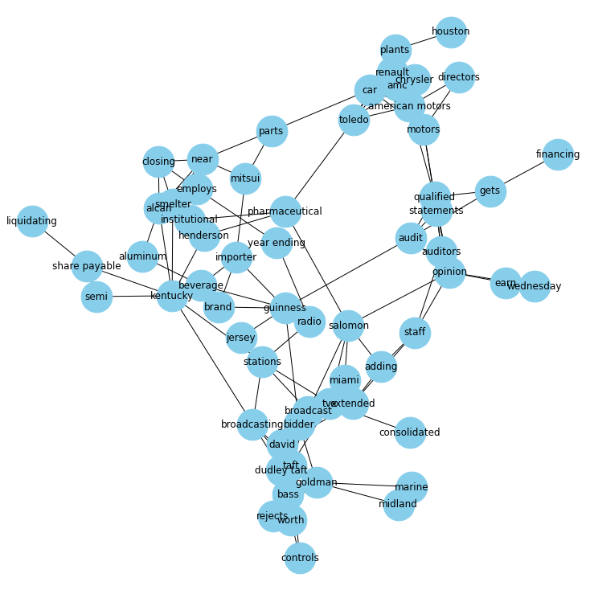
Here we show a Bipartite Closeup of the cluster
plt.figure(figsize=(10,10))
pos = nx.kamada_kawai_layout(smallGrap) # k regulates the distance between nodes
node_color = ["skyblue" if d["bipartite"]==1 else "red" for n, d in smallGrap.nodes(data=True)]
nx.draw(smallGrap, with_labels=False, node_color=node_color, #'skyblue',
node_size=150, edge_cmap=plt.cm.Blues, pos = pos)
# plt.show()
# plt.savefig(os.path.join(".", "BipartiteCloseUp.png"), dpi=300, format="png")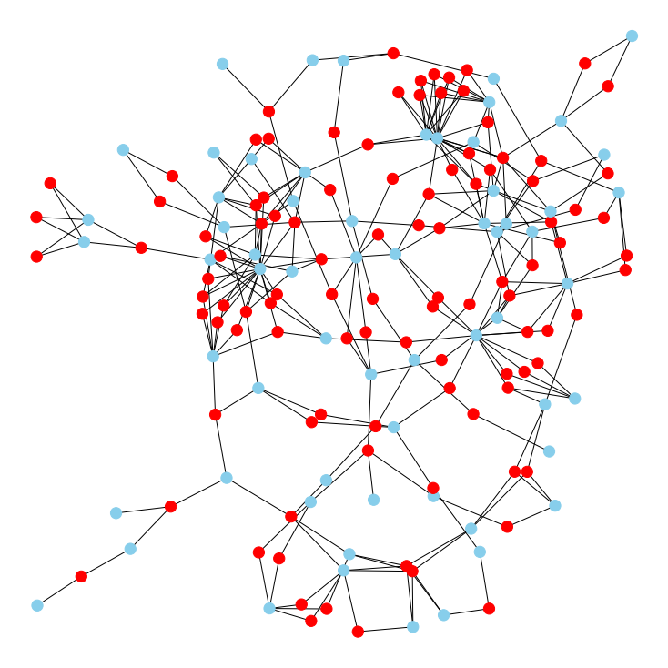
Embeddings
Using TSNE
from node2vec import Node2Vec
node2vec = Node2Vec(filteredEntityGraph, dimensions=5)
model = node2vec.fit(window=10)
embeddings = model.wv Computing transition probabilities: 100%|██████████| 2265/2265 [00:07<00:00, 321.05it/s]
Generating walks (CPU: 1): 100%|██████████| 10/10 [01:45<00:00, 10.55s/it]Using Node2Vec
Node2Vec allows also to compute a similarity between entities
[('turkish', 0.9921346306800842),
('lira', 0.987409234046936),
('debts', 0.9794315099716187),
('coastal', 0.9783217906951904),
('athens', 0.9770432710647583),
('greece', 0.9727554321289062),
('benefits', 0.9630903601646423),
('carolina', 0.962989330291748),
('sharp', 0.9628170728683472),
('jones', 0.9522427320480347)]Document-Document Graph Projection
Name:
Type: Graph
Number of nodes: 10788
Number of edges: 12994465
Average degree: 2409.0591/Users/deusebio/.pyenv/versions/3.7.6/envs/ml-book-7/lib/python3.7/site-packages/matplotlib/axes/_axes.py:6694: RuntimeWarning: invalid value encountered in multiply
boffset = -0.5 * dr * totwidth * (1 - 1 / nx)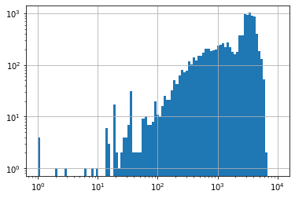
plt.figure(figsize=(12, 5))
plt.subplot(1,2,1)
plotDistribution(degrees, 13)
plt.yscale("log")
plt.title("Degree Distribution")
plt.subplot(1,2,2)
plotDistribution(allEdgesWeights, 20)
plt.xlim([1E-2, 10])
plt.yscale("log")
plt.title("Edge Weight Distribution")Text(0.5, 1.0, 'Edge Weight Distribution')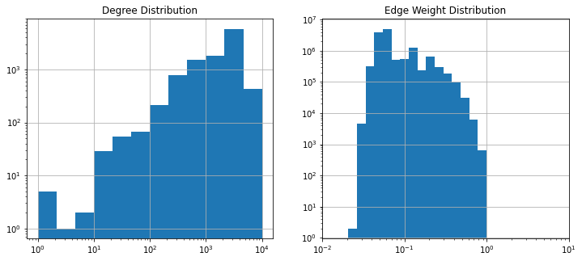
Name:
Type: Graph
Number of nodes: 1958
Number of edges: 7884
Average degree: 8.0531Global and Local Properties
/Users/deusebio/.pyenv/versions/3.7.6/envs/ml-book-7/lib/python3.7/site-packages/matplotlib/axes/_axes.py:6694: RuntimeWarning: invalid value encountered in multiply
boffset = -0.5 * dr * totwidth * (1 - 1 / nx)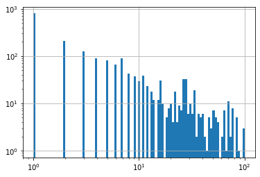
plt.figure(figsize=(12, 5))
plt.subplot(1,2,1)
plotDistribution(degrees, 13)
plt.yscale("log")
plt.title("Degree Distribution")
plt.subplot(1,2,2)
plotDistribution(allEdgesWeights, 20)
plt.xlim([1E-2, 10])
plt.yscale("log")
plt.title("Edge Weight Distribution")Text(0.5, 1.0, 'Edge Weight Distribution')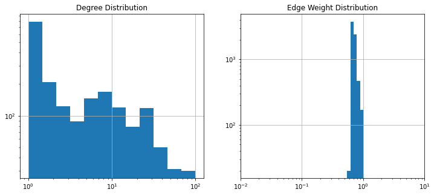
Core - Periphery Description and Analysis
plt.axis("off")
nx.draw_networkx(filteredDocumentGraph, pos=spring_pos, node_color=default_node_color,
edge_color=default_edge_color, with_labels=False, node_size=15)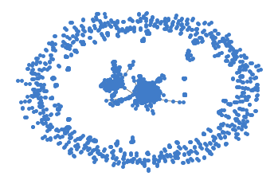
To be visualized in Gephi
nx.write_gexf(coreDocumentGraph,“coreGraph.gexf”)
Name:
Type: Graph
Number of nodes: 1050
Number of edges: 7112
Average degree: 13.5467/Users/deusebio/.pyenv/versions/3.7.6/envs/ml-book-7/lib/python3.7/site-packages/matplotlib/axes/_axes.py:6694: RuntimeWarning: invalid value encountered in multiply
boffset = -0.5 * dr * totwidth * (1 - 1 / nx)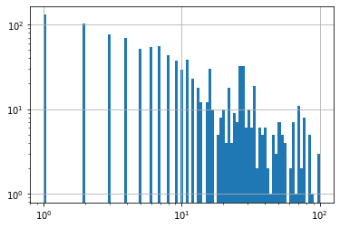
plt.axis("off")
nx.draw_networkx(coreDocumentGraph, pos=spring_pos, node_color=default_node_color,
edge_color=default_edge_color, with_labels=False, node_size=15)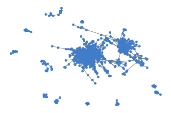
Community Detection and Topics Clustering
Text(0.5, 0, 'Entropy')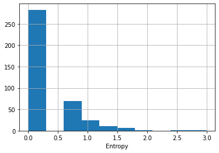
plt.figure(figsize=(8,8))
pos = nx.spring_layout(topicsGraph, k=0.35) # k regulates the distance between nodes
nx.draw(topicsGraph, with_labels=True, node_color='skyblue', node_size=1500, edge_cmap=plt.cm.Blues, pos = pos)
# plt.show()
# plt.savefig(os.path.join(".", "TopicsAll.png"), dpi=300, format="png")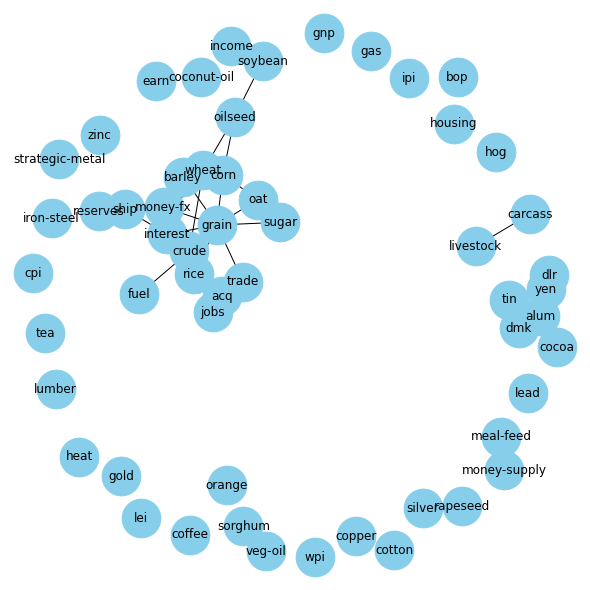
plt.figure(figsize=(8,8))
pos = nx.kamada_kawai_layout(filteredTopicsGraph) # k regulates the distance between nodes
nx.draw(filteredTopicsGraph, with_labels=True, node_color='skyblue', node_size=1500,
edge_cmap=plt.cm.Blues, pos = pos)
# plt.show()
# plt.savefig(os.path.join(".", "TopicsCore.png"), dpi=300, format="png")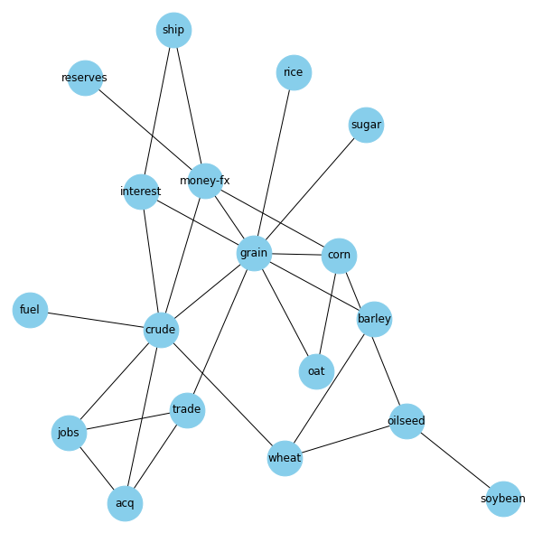
To be visualized in Gephi
nx.write_gexf(coreDocumentGraph, “coreDocumentGraph”)
Embeddings for the Document-Document Graph
from node2vec import Node2Vec
node2vec = Node2Vec(coreDocumentGraph, dimensions=20)
model = node2vec.fit(window=10)
embeddings = model.wv Computing transition probabilities: 100%|██████████| 1050/1050 [00:54<00:00, 19.18it/s]
Generating walks (CPU: 1): 100%|██████████| 10/10 [00:47<00:00, 4.70s/it]| 0 | 1 | 2 | 3 | 4 | 5 | 6 | 7 | 8 | 9 | 10 | 11 | 12 | 13 | 14 | 15 | 16 | 17 | 18 | 19 | |
|---|---|---|---|---|---|---|---|---|---|---|---|---|---|---|---|---|---|---|---|---|
| 0 | -0.960548 | 0.535780 | 0.385748 | 1.101508 | 3.875988 | 1.070799 | -4.849534 | -1.820060 | -2.966034 | 1.655846 | 1.737207 | -3.332000 | -5.323652 | -4.393471 | -1.154701 | 0.506530 | -1.585463 | -4.248538 | 2.294325 | 3.957590 |
| 1 | -1.162390 | 0.251178 | 0.186549 | 0.988687 | 3.733672 | 0.626086 | -4.566340 | -2.196690 | -2.987178 | 1.805605 | 2.033937 | -3.546881 | -4.945525 | -4.785186 | -0.997341 | 0.217447 | -1.068717 | -4.298778 | 2.283113 | 3.929447 |
| 2 | -0.560644 | 0.339182 | 0.291281 | 1.226845 | 4.163576 | 0.812360 | -4.543347 | -2.294925 | -2.825094 | 1.498989 | 1.761113 | -3.436803 | -4.634498 | -4.171238 | -1.194322 | 0.629293 | -1.354635 | -4.453906 | 1.763564 | 3.575306 |
| 3 | -2.838000 | -0.670331 | 1.331425 | -2.872283 | 0.375439 | 4.298521 | -0.158841 | -0.170265 | -2.612220 | 0.694892 | 3.447092 | -2.284607 | -2.858946 | -4.312414 | -5.989464 | -0.026698 | -1.416963 | -5.212801 | -4.163705 | -0.600494 |
| 4 | -2.556705 | 0.965237 | -0.061232 | 1.352170 | 4.276524 | 1.577441 | -2.324412 | -0.380508 | -2.863870 | 1.455134 | 3.609730 | -4.132732 | -2.480354 | -0.950713 | -2.587649 | 0.175977 | -1.113148 | -5.748485 | -2.448518 | 1.200612 |
| ... | ... | ... | ... | ... | ... | ... | ... | ... | ... | ... | ... | ... | ... | ... | ... | ... | ... | ... | ... | ... |
| 1045 | 0.331984 | 0.523769 | 0.103705 | 0.561897 | 0.521912 | -0.852221 | -1.032729 | 0.337699 | 0.679176 | 0.848446 | -0.056654 | -0.641469 | -0.082838 | 0.306723 | -0.225306 | -0.910874 | -0.478912 | -0.061075 | -0.083310 | -0.278903 |
| 1046 | 0.166020 | -0.576071 | 0.473827 | -0.074774 | 0.542515 | -0.566927 | 0.635151 | 0.547837 | 0.188676 | -0.798186 | -0.598822 | 0.590872 | -0.403117 | 0.617905 | 1.012607 | 0.195247 | 0.337702 | 0.182143 | 0.600068 | -0.636223 |
| 1047 | 0.471930 | -0.705889 | 0.055459 | -0.975193 | 0.099381 | -0.253793 | 0.181459 | -0.095714 | 0.663958 | -1.006062 | -0.361706 | 0.433246 | 1.090418 | 0.211187 | -0.207774 | -0.705345 | 0.371806 | 0.108446 | 0.908669 | -1.126879 |
| 1048 | -0.236891 | 0.118807 | -0.029381 | -0.073577 | -0.089825 | 0.016194 | 0.573447 | -0.264896 | 0.540209 | -0.282678 | -0.073139 | 0.051319 | 0.419923 | 0.305243 | -0.105601 | -0.014267 | -0.833588 | 0.948402 | 0.214101 | 0.181394 |
| 1049 | 0.303921 | -0.329447 | -0.198187 | -0.968494 | 0.568693 | -0.778354 | 0.738360 | -0.507104 | 0.589299 | -1.071499 | 0.007456 | 0.132762 | 0.568386 | 0.526633 | -0.031978 | 0.094264 | 0.673068 | 0.048564 | 0.759775 | -1.122763 |
1050 rows × 20 columns
| 0 | 1 | 2 | 3 | 4 | 5 | 6 | 7 | 8 | 9 | 10 | 11 | 12 | 13 | 14 | 15 | 16 | 17 | 18 | 19 | |
|---|---|---|---|---|---|---|---|---|---|---|---|---|---|---|---|---|---|---|---|---|
| test/20368 | -0.960548 | 0.535780 | 0.385748 | 1.101508 | 3.875988 | 1.070799 | -4.849534 | -1.820060 | -2.966034 | 1.655846 | 1.737207 | -3.332000 | -5.323652 | -4.393471 | -1.154701 | 0.506530 | -1.585463 | -4.248538 | 2.294325 | 3.957590 |
| test/20442 | -1.162390 | 0.251178 | 0.186549 | 0.988687 | 3.733672 | 0.626086 | -4.566340 | -2.196690 | -2.987178 | 1.805605 | 2.033937 | -3.546881 | -4.945525 | -4.785186 | -0.997341 | 0.217447 | -1.068717 | -4.298778 | 2.283113 | 3.929447 |
| test/20221 | -0.560644 | 0.339182 | 0.291281 | 1.226845 | 4.163576 | 0.812360 | -4.543347 | -2.294925 | -2.825094 | 1.498989 | 1.761113 | -3.436803 | -4.634498 | -4.171238 | -1.194322 | 0.629293 | -1.354635 | -4.453906 | 1.763564 | 3.575306 |
| test/16715 | -2.838000 | -0.670331 | 1.331425 | -2.872283 | 0.375439 | 4.298521 | -0.158841 | -0.170265 | -2.612220 | 0.694892 | 3.447092 | -2.284607 | -2.858946 | -4.312414 | -5.989464 | -0.026698 | -1.416963 | -5.212801 | -4.163705 | -0.600494 |
| test/20800 | -2.556705 | 0.965237 | -0.061232 | 1.352170 | 4.276524 | 1.577441 | -2.324412 | -0.380508 | -2.863870 | 1.455134 | 3.609730 | -4.132732 | -2.480354 | -0.950713 | -2.587649 | 0.175977 | -1.113148 | -5.748485 | -2.448518 | 1.200612 |
| ... | ... | ... | ... | ... | ... | ... | ... | ... | ... | ... | ... | ... | ... | ... | ... | ... | ... | ... | ... | ... |
| test/20255 | 0.331984 | 0.523769 | 0.103705 | 0.561897 | 0.521912 | -0.852221 | -1.032729 | 0.337699 | 0.679176 | 0.848446 | -0.056654 | -0.641469 | -0.082838 | 0.306723 | -0.225306 | -0.910874 | -0.478912 | -0.061075 | -0.083310 | -0.278903 |
| test/20266 | 0.166020 | -0.576071 | 0.473827 | -0.074774 | 0.542515 | -0.566927 | 0.635151 | 0.547837 | 0.188676 | -0.798186 | -0.598822 | 0.590872 | -0.403117 | 0.617905 | 1.012607 | 0.195247 | 0.337702 | 0.182143 | 0.600068 | -0.636223 |
| training/10885 | 0.471930 | -0.705889 | 0.055459 | -0.975193 | 0.099381 | -0.253793 | 0.181459 | -0.095714 | 0.663958 | -1.006062 | -0.361706 | 0.433246 | 1.090418 | 0.211187 | -0.207774 | -0.705345 | 0.371806 | 0.108446 | 0.908669 | -1.126879 |
| training/11154 | -0.236891 | 0.118807 | -0.029381 | -0.073577 | -0.089825 | 0.016194 | 0.573447 | -0.264896 | 0.540209 | -0.282678 | -0.073139 | 0.051319 | 0.419923 | 0.305243 | -0.105601 | -0.014267 | -0.833588 | 0.948402 | 0.214101 | 0.181394 |
| training/1532 | 0.303921 | -0.329447 | -0.198187 | -0.968494 | 0.568693 | -0.778354 | 0.738360 | -0.507104 | 0.589299 | -1.071499 | 0.007456 | 0.132762 | 0.568386 | 0.526633 | -0.031978 | 0.094264 | 0.673068 | 0.048564 | 0.759775 | -1.122763 |
1050 rows × 20 columns
Name:
Type: Graph
Number of nodes: 25752
Number of edges: 100311
Average degree: 7.7905Extracting the embeddings to be used in shallow-learning models. Please do vary the dimensions and the window parameters to generate multiple combination to be cross-validated
from node2vec import Node2Vec
dimensions = 10
window = 20
node2vec = Node2Vec(G, dimensions=dimensions)
model = node2vec.fit(window=window)
embeddings = model.wv
pd.DataFrame(embeddings.vectors, index=embeddings.index2word)\
.to_pickle(f"./embeddings/bipartiteGraphEmbeddings_{dimensions}_{window}.p")Computing transition probabilities: 100%|██████████| 25752/25752 [03:59<00:00, 107.40it/s]
Generating walks (CPU: 1): 100%|██████████| 10/10 [34:19<00:00, 205.97s/it]